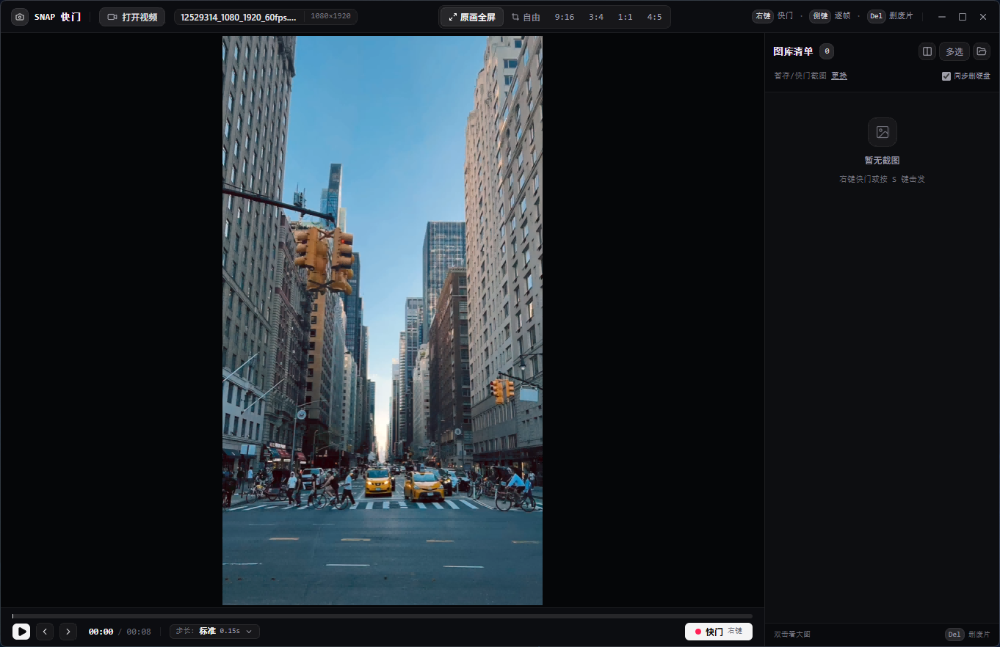

告别臃肿。基于 Tauri 2.0 (Rust) 构建，整包免安装仅 22MB，内存占用仅 25MB。单手鼠标极速高刷步进，右键快门直裁，Del 瞬间物理秒删本地废片。

拒绝 AI 噱头，把全部算力让渡给单手机械式操控手感
大拇指单击 0.15s 零延迟微动（专挑神采），长按无缝接管原生 GPU 倍速冲刺，后退采用 seeked 垂直同步流水线，松手 0ms 瞬间急停。
鼠标右键瞬间击发写盘。支持全屏原画、9:16、3:4、1:1、4:5 以及八向边角自由拖拽比例，100% 原始物理像素点对点超清保存。
右侧双列完整原貌展示，杜绝裁切缩略。按 Del 键瞬间彻底删除本地硬盘废片并自动焦点顺移，双击无缝进入全屏沉浸看图器。
支持 MP4 原生硬解与 MPEG-TS（内置 mpegts.js 零延迟流式解封装）。首帧激活技术，拖入即放，第一秒第一帧瞬间立现。
| 毫秒快门截取 | 鼠标右键 或键盘 S 键（瞬间抓取并异步写入本地硬盘） |
| 快进步进 | 鼠标侧键(前) 或键盘 →（单击微动，长按倍速放映冲刺） |
| 快退步进 | 鼠标侧键(后) 或键盘 ←（单击微退，长按高刷倒带） |
| 秒删废片 | Del 或 Backspace（物理删除当前选中废片，自动切下一张） |
| 大图看图器 | 双击卡片或按 Enter（支持方向键切图、Del键秒删、Esc退出） |
| 播放 / 暂停 | Space 空格键 |